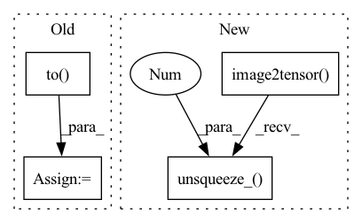

Pattern ID :6805
Before Change
hr_ycbcr = imgproc.convert_rgb_to_ycbcr(hr_image)
hr_y_image = hr_ycbcr[..., 0]
hr_y_image /= 255.
hr_y_tensor = torch.from_numpy(hr_y_image).to( config.device) .unsqueeze(0).unsqueeze(0)
hr_y_tensor = hr_y_tensor.half()
// Only reconstruct the Y channel image data.
with torch.no_grad():After Change
// Extract Y channel lr image data
lr_image = np.array(lr_image).astype(np.float32)
lr_ycbcr_image = imgproc.convert_rgb_to_ycbcr(lr_image)
lr_y_tensor = imgproc.image2tensor(lr_ycbcr_image, range_norm=False, half=False).unsqueeze_(0 )
// Extract Y channel hr image data.
hr_image = np.array(hr_image).astype(np.float32)
hr_ycbcr_image = imgproc.convert_rgb_to_ycbcr(hr_image)In pattern: SUPERPATTERN
Frequency: 4
Non-data size: 4
Instances Fragment ID: 23192065
Project Name: lornatang/srcnn-pytorch
Commit Name: b6ddb986e995a802e1a2a21d35c5045b641be0bd
Time: 2021-11-24
Author: liuchangyu1111@gmail.com
File Name: validate.py
M Class Name: AnonimousClass
N Class Name: AnonimousClass
M Method Name: main(0)
N Method Name: main(0)
M Parent Class:
N Parent Class:
M File Name: validate.py
N File Name: validate.py
M Start Line: 35
M End Line: 94
N Start Line: 73
N End Line: 88
Before Change
sr_image = imgproc.tensor2image(sr, range_norm=False, half=True)
sr_image = sr_image.astype(np.float32) / 255.
sr_y_image = imgproc.rgb2ycbcr(sr_image, use_y_channel=True)
sr_y_tensor = imgproc.image2tensor(sr_y_image, range_norm=False, half=True).to( config.device) .unsqueeze_(0)
hr_image = imgproc.tensor2image(hr, range_norm=False, half=True)
hr_image = hr_image.astype(np.float32) / 255.
After Change
// Convert Y image to Y tensor
sr_y_tensor = imgproc.image2tensor(sr_y_image, range_norm=False, half=False).unsqueeze_(0)
hr_y_tensor = imgproc.image2tensor(hr_y_image, range_norm=False, half=False).unsqueeze_(0 )
// Convert CPU tensor to CUDA tensor
sr_y_tensor = sr_y_tensor.to(device=config.device, memory_format=torch.channels_last, non_blocking=True)
Fragment ID: 23192064
Project Name: lornatang/esrgan-pytorch
Commit Name: 70fe877925fd4c68e5e17573e987de7fd6f8818a
Time: 2022-04-22
Author: liuchangyu1111@gmail.com
File Name: train_esrgan.py
M Class Name: AnonimousClass
N Class Name: AnonimousClass
M Method Name: validate(6)
N Method Name: validate(6)
M Parent Class:
N Parent Class:
M File Name: train_esrgan.py
N File Name: train_esrgan.py
M Start Line: 393
M End Line: 432
N Start Line: 410
N End Line: 449
Before Change
sr_image = imgproc.tensor2image(sr, range_norm=False, half=True)
sr_image = sr_image.astype(np.float32) / 255.
sr_y_image = imgproc.rgb2ycbcr(sr_image, use_y_channel=True)
sr_y_tensor = imgproc.image2tensor(sr_y_image, range_norm=False, half=True).to( config.device) .unsqueeze_(0)
hr_image = imgproc.tensor2image(hr, range_norm=False, half=True)
hr_image = hr_image.astype(np.float32) / 255.
After Change
// Convert Y image to Y tensor
sr_y_tensor = imgproc.image2tensor(sr_y_image, range_norm=False, half=False).unsqueeze_(0)
hr_y_tensor = imgproc.image2tensor(hr_y_image, range_norm=False, half=False).unsqueeze_(0 )
// Convert CPU tensor to CUDA tensor
sr_y_tensor = sr_y_tensor.to(device=config.device, memory_format=torch.channels_last, non_blocking=True)
Fragment ID: 23192075
Project Name: lornatang/real_esrgan-pytorch
Commit Name: df74602d06ea8bf3c511901e97f677729a77736e
Time: 2022-04-22
Author: liuchangyu1111@gmail.com
File Name: train_realesrgan.py
M Class Name: AnonimousClass
N Class Name: AnonimousClass
M Method Name: validate(7)
N Method Name: validate(7)
M Parent Class:
N Parent Class:
M File Name: train_realesrgan.py
N File Name: train_realesrgan.py
M Start Line: 533
M End Line: 549
N Start Line: 534
N End Line: 563
Before Change
lr_ycbcr = imgproc.convert_rgb_to_ycbcr(lr_image)
lr_y_image = lr_ycbcr[..., 0]
lr_y_image /= 255.
lr_y_tensor = torch.from_numpy(lr_y_image).to( config.device) .unsqueeze(0).unsqueeze(0)
lr_y_tensor = lr_y_tensor.half()
// Extract Y channel hr image data.After Change
// Extract Y channel lr image data
lr_image = np.array(lr_image).astype(np.float32)
lr_ycbcr_image = imgproc.convert_rgb_to_ycbcr(lr_image)
lr_y_tensor = imgproc.image2tensor(lr_ycbcr_image, range_norm=False, half=True).unsqueeze_(0 )
// Extract Y channel hr image data.
hr_image = np.array(hr_image).astype(np.float32)
hr_ycbcr_image = imgproc.convert_rgb_to_ycbcr(hr_image) Fragment ID: 23192077
Project Name: lornatang/vdsr-pytorch
Commit Name: 423bc11c59dd05d804644664c689af9a9d8e60eb
Time: 2021-11-24
Author: liuchangyu1111@gmail.com
File Name: validate.py
M Class Name: AnonimousClass
N Class Name: AnonimousClass
M Method Name: main(0)
N Method Name: main(0)
M Parent Class:
N Parent Class:
M File Name: validate.py
N File Name: validate.py
M Start Line: 73
M End Line: 94
N Start Line: 73
N End Line: 88